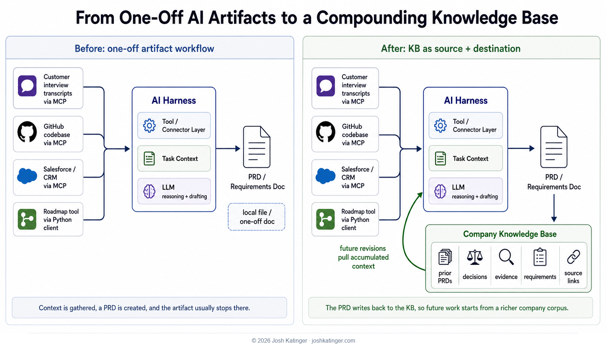

Lately I've been building little operating systems out of text files. Maybe that sounds more dramatic than it is. In practice, it means folders full of Markdown, JSON ledgers, decision logs, meeting notes, source maps, task backlogs, and instruction files that tell an AI agent how to work inside that folder without making a mess of things...or as little mess as possible.
It also, occasionally, is just me arguing with a generated README.md at 11:30 at night because the agent keeps treating a meeting note like a roadmap. The future remains stupid in very specific ways.
The basic pattern is real, though. I have been using this approach in my own Obsidian vault for work, career, personal systems, professional writing, and task management. The useful part is not that the files are Markdown. Markdown is just the boring little miracle that makes the whole thing portable. The useful part is that the files create a shared operating surface: a place where humans and AI tools can both see the same context, update the same artifacts, and pick up where the last session left off.
I am clearly not the only person circling this.
Andrej Karpathy's LLM Wiki describes a three-layer pattern: raw sources, an LLM-maintained wiki, and a schema file that tells the agent how to maintain it. My Brain Is Full Crew turns an Obsidian vault into a coordinated set of agents and skills. PersonalOS is a local AI-powered task management framework built around files like BACKLOG.md, GOALS.md, and AGENTS.md. Dex, built by Dave Killeen, packages a personal AI Chief of Staff around Claude Code, hooks, skills, MCP, and a role-adaptive file system. Kieran Flanagan wrote about his AI Second Brain, built on Obsidian plus Claude Code. Tal Raviv, in "I don't know what 'build an agent' means", cuts through the fog and basically says: stop mystifying this. Agents are chat threads, tools, skills, filesystems, triggers, and sometimes subagents.
The market seems to be reaching for the phrase "AI OS" to describe this stuff. I get why. It sounds bigger than "folder full of Markdown files." It gestures at something real: a set of instructions, workflows, memory, tools, and context that an AI system can operate within.
I also kind of hate that term.
"OS" already means something. Windows is an OS. macOS is an OS. Linux is an OS. Calling a Markdown knowledge corpus an OS risks making a fuzzy space fuzzier, which is exactly what AI discourse needs more of, apparently.
In my own work, I have been moving toward a simpler term: knowledge base, or KB. Not because it is trendier. It is not. It is aggressively unsexy. But it says the important thing: this is the company-owned body of context, evidence, decisions, instructions, and operating memory that other tools should read from and write back to.
So for the rest of this piece, I am going to use "KB." The market may keep saying "AI OS." Fine. I will survive. But if I am trying to help a team build something durable, I would rather start with the less confusing term.
The question I am working through now is not "what should the folder structure be?"
It is: where does this KB fit in the AI stack, especially as every harness starts adding memory of its own?
The Simple Stack
Here is the simplest version of the stack I keep coming back to:

This is intentionally too simple. Real systems have evals, observability, approvals, identity, permissions, embeddings, graph layers, connectors, policy enforcement, and more.
But this version is enough to expose the question: what is the company-owned memory layer, and what is just a convenience layer inside the tool you happen to be using?
My current answer, based on what I am learning in my own work, is this:
The KB owns institutional truth. The harness owns local recall.
Or, in a slightly more technical phrasing:
The KB is the corpus. Harness memory is a cache.
I do not mean that as a final answer carved into a stone tablet. This is where my thinking is today. It will probably change as the tools change, as the patterns mature, and as I keep watching these systems fail in new and interesting ways. But the boundary has been useful so far.
The Harness Wants To Remember You
By necessity, every serious AI harness has memory. If the harness cannot remember your preferences, your project conventions, your prior corrections, or the fact that you hate giant explanatory preambles before simple answers, it becomes exhausting to use.
Codex, for example, has a surprisingly legible memory architecture. Its memory pipeline is described in the open-source Codex repo: a startup memory process runs for eligible sessions, extracts structured memories from recent "rollouts," writes compact rollout summaries, and consolidates those into filesystem memory artifacts such as raw_memories.md, rollout_summaries/, MEMORY.md, and memory_summary.md. In my local Codex setup, I can inspect these files directly. memory_summary.md is the compact startup brief. MEMORY.md is the larger searchable index. rollout_summaries/ contains the receipts: post-run summaries with task outcomes, reusable learnings, and failure modes.
That is useful. It is also clearly harness memory.
Claude Code makes a related distinction. Its docs separate CLAUDE.md files, which humans write as persistent project instructions, from auto memory, which Claude writes from corrections and learned patterns. ChatGPT Projects have their own project-scoped memory model. MCP, the Model Context Protocol, points in another direction entirely: a standard way for AI hosts to reach external tools, resources, and prompts.
The industry is not blind to the distinction. The distinction is emerging all over the place. What is not settled is the boundary between company-owned context and tool-owned memory.
Every vendor benefits when its harness feels like "the one that knows me." Good memory makes the tool better. It also makes the tool stickier. From the company's point of view, there is a difference between useful personalization and letting the harness become the only place important working context lives.
That is the line I am trying to watch.
Cache vs Corpus
Here is the boundary that is evolving in my current work.
If a customer discovery insight changes your roadmap, that belongs in the KB. If a support thread reveals a recurring implementation failure, that belongs in the KB. If a pricing decision was made, reversed, and then made again after a painful executive meeting, that belongs in the KB too, along with enough context that the next person does not confidently resurrect the losing argument six months later.
If your AI harness learns that you prefer concise status updates, that belongs in harness memory. If it learns that a specific repo needs tests to run through a wrapper, harness memory can remember the shortcut, but the command itself should live in the repo instructions. If it learns that a folder has a startup file and a source hierarchy, harness memory can remember where to start, but the operating contract belongs in the folder.
The harness should remember how to find the source of truth. It should not quietly become the source of truth.
For a company, the shared KB should hold anything that needs to survive the tool, the employee, and the quarter: product strategy, customer research, evidence chains, decisions, reversals, roadmap context, operating workflows, project briefs, market research, implementation notes, governance rules, and the instructions any capable harness should be able to read.
Harness memory should hold the things that make a tool faster and less annoying for a particular user or environment: preferences, shortcuts, routing hints, recent corrections, local paths, and reminders about how the user likes to work.
The highest-value harness memories are pointers back to the KB. "For public writing, read this voice guide." "For backlog grooming, use this work-management tool." "For this repo, start with these instructions." That kind of memory helps the model get oriented faster without creating a hidden fork of the company's operating context.
Why This Matters
This matters to anyone doing serious AI-assisted work: product managers, operators, researchers, engineers, founders, designers, GTM leaders, analysts, consultants, and all the people currently trying to turn chat windows into something closer to a durable workflow.
Memory shapes what the model can see, reuse, and act on without the human rebuilding context by hand. If an AI workflow can carry forward prior decisions, it starts to feel like collaboration. If it cannot, it feels like working with a very smart intern with no notebook. Useful, but exhausting.
Shared and inspectable memory gives the team leverage. Private and hidden memory gives one person leverage. Vendor-tied memory raises switching costs. Portable memory lets teams move between harnesses and tools as the market changes.
And the market is absolutely going to change. Today's favorite harness may not be tomorrow's. Models will change. Enterprise permissions will change. Pricing will change. Security reviews will change. Someone in procurement will discover a clause they do not like and suddenly your whole AI workflow will need a Plan B.
If your company memory lives in a portable KB, that is annoying.
If your company memory lives only in the harness, that is a real problem.
The value here is not just "the AI gives better answers." The value is that the company becomes harder to reset. Employee leaves? The context does not leave with them. Tool changes? The corpus is still there. New teammate joins? They can learn from decisions and evidence, not just vibes and a few heroic Slack archaeologists.
This is where text files are weirdly powerful. They are boring, portable, diffable, searchable, reviewable, and easy for multiple tools to consume. A Markdown folder does not care whether you open it from Codex, Claude Code, Cursor, Obsidian, VS Code, or whatever AI workbench gets funded next.
That is not a small thing.
The Risks Are Real
I do not want to pretend this is all upside.
A compact, well-maintained KB is valuable because it concentrates context. That also makes it dangerous. If someone can steal it, they are not just stealing documents. They are stealing the company's current best understanding of customers, strategy, constraints, decisions, and how work actually gets done.
The old world leaked docs. The new world can leak compressed institutional judgment. Permissions, provenance, audit logs, redaction, and access boundaries are not enterprise theater. They are part of whether this system can be trusted.
There is another uncomfortable thing here too. When we talk about "capturing institutional knowledge," we are often talking about extracting knowledge that used to live in employees' heads. That can be good. It prevents fragile hero systems. It guards against the bus/lottery factor. It makes onboarding less awful. It makes companies less dependent on the one person who knows where the bodies are buried in Jira.
But let's be real... if a company successfully codifies more of what only experienced employees used to know, some leaders will ask whether they need as many of those employees.
That fear is not irrational. It is one of the stakes.
My current view is that pretending the fear is fake makes the technology conversation worse. The better answer is to design these systems so they increase the leverage of expert employees instead of quietly turning them into training data for their own replacement. That means human review, attribution, visible expertise, and governance that treats the KB as a shared operating asset rather than an extraction machine.
Maybe that sounds naive. Or maybe it is just practical: if people do not trust the system, they will route around it, starve it, poison it, or perform for it. Then your beautiful AI OS becomes another corporate knowledge management project, which is to say, a place where PDFs go to die.
My Working Rules, For Now
These are not laws. They are the rules that are helping me think clearly at this stage:
- If another person or another harness needs it, put it in the KB.
- If it is a preference, shortcut, or routing hint, harness memory is probably fine.
- If it changes strategy, customer understanding, commitments, or operating cadence, it belongs in the shared corpus.
- If the harness learns something durable, promote it back into the KB.
- If the KB and harness memory disagree, the KB wins until a human updates it.
- If a memory cannot be inspected, corrected, exported, or governed, do not treat it as institutional truth.
- Decide deliberately where truth lives. Do not let the chat history win because it was convenient.
That last one is probably the whole post.
Where This Could Go
I think the next interesting layer is the corporate KB becoming a living operating layer: not a dumping ground, not a stale internal wiki everyone feels bad about ignoring, and not an internal search box with a chatbot bolted on top. A real operating layer should know the source hierarchy, know what changed, know what needs review, know which claims are stale, know which decisions are still open, and help a team act without reassembling context from scratch every Monday.
For people building AI workflows, this is a strange and useful moment. We are used to thinking about interfaces as screens, workflows, APIs, onboarding paths, dashboards, and admin panels. But in AI systems, the context layer is becoming part of the interface. The structure of the KB determines what the model can understand, what it can safely do, and whether the team can trust the output.
The harness should help the model work faster in the moment. The KB should help the company remember over time.
If we blur those two, we get convenience now and lock-in later. That feels like exactly the kind of tradeoff worth catching early, while the pattern is still soft enough to change.